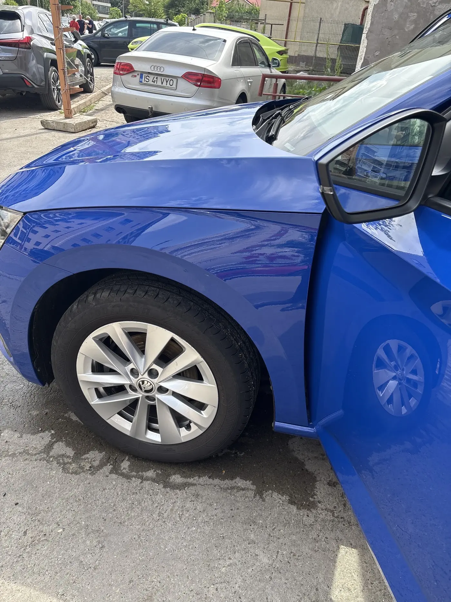
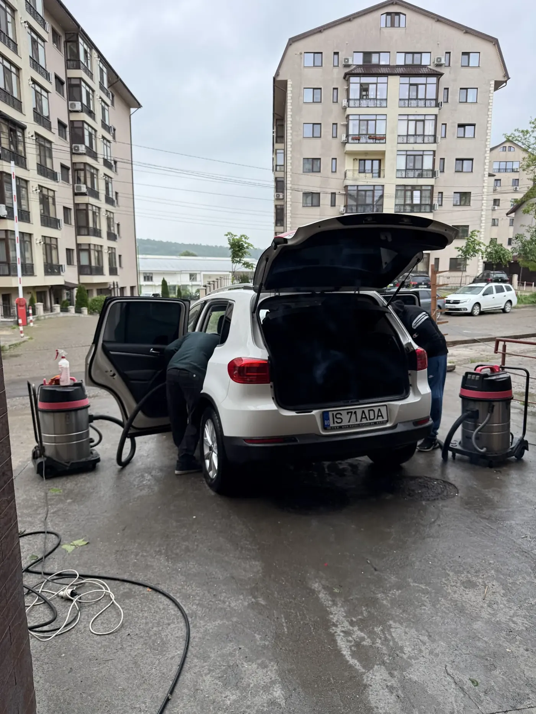
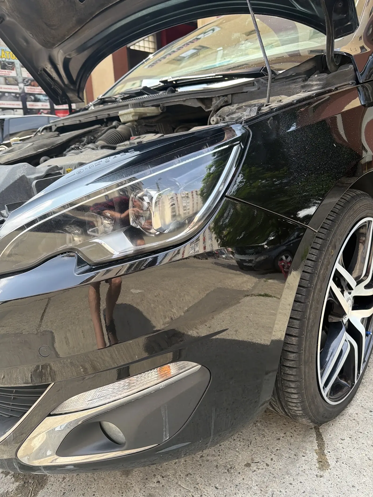

Prezentare Pacheco Studios · {{propunere de site pentru Auto Spa & Detailing|website proposal for Auto Spa & Detailing|proposta de site para o Auto Spa & Detailing}}
{{Intră murdară.|Comes in dirty.|Entra suja.}}{{Iese impecabilă|Leaves spotless|Sai impecável}}
{{Spălătorie, polish și cosmetică auto pe Șoseaua Nicolina 147. Exterior, interior și detaliile pe care alții le sar. Deschis în fiecare zi.|Car wash, polish and car care on Șoseaua Nicolina 147. Outside, inside, and the details others skip. Open every day.|Lavagem, polimento e cosmética auto na Șoseaua Nicolina 147. Exterior, interior e os detalhes que os outros saltam. Aberto todos os dias.}}
{{Scris pe firmă: spălătorie, polish, cosmetică auto.|It's on the sign: wash, polish, car care.|Está na placa: lavagem, polimento, cosmética auto.}}
{{Trei lucruri, făcute cu răbdare. Restul e atenție la detalii, adică exact ce scriu clienții despre noi.|Three things, done patiently. The rest is attention to detail, which is exactly what customers write about us.|Três coisas, feitas com paciência. O resto é atenção ao detalhe, que é exatamente o que os clientes escrevem sobre nós.}}

{{Exterior|Exterior|Exterior}}
{{Spălare cu spumă activă|Snow-foam wash|Lavagem com espuma ativa}}
{{Spuma înmoaie murdăria, apa o ia, iar caroseria se usucă fără urme.|The foam loosens the dirt, the water takes it away, and the paint dries without streaks.|A espuma amolece a sujidade, a água leva-a e a carroçaria seca sem marcas.}}

{{Interior|Interior|Interior}}
{{Toate ușile deschise|All doors open|Todas as portas abertas}}
{{Aspirare, bord, plastice, geamuri, covorașe. Și interioarele care par fără speranță.|Vacuuming, dashboard, trims, windows, mats. Even interiors that look like a lost cause.|Aspiração, tablier, plásticos, vidros, tapetes. Até os interiores que parecem não ter salvação.}}

Polish
{{Luciu în care te vezi|A shine you can see yourself in|Um brilho onde se vê ao espelho}}
{{Polish pe caroserie și cosmetică auto, pentru vopseaua care și-a pierdut culoarea.|Body polish and car care, for paint that has lost its depth.|Polimento da carroçaria e cosmética auto, para a pintura que perdeu a cor.}}
{{Începe cu mașina|Start with your car|Comece pelo carro}}
{{Ce mașină aduci?|What are you bringing?|Que carro traz?}}
{{Apa alunecă. Murdăria, la fel.|Water slides off. So does dirt.|A água escorrega. A sujidade também.}}
{{După polish, un strat de protecție face ca apa să se strângă în picături și să alunece de pe caroserie, iar următoarea spălare e mai ușoară.|After polishing, a protective layer makes water bead up and slide off the paint, and the next wash is easier.|Depois do polimento, uma camada de proteção faz a água juntar-se em gotas e escorregar da carroçaria, e a lavagem seguinte fica mais fácil.}}
{{Ceară|Wax|Cera}}{{Luciu și protecție pentru câteva săptămâni.|Shine and protection for a few weeks.|Brilho e proteção para algumas semanas.}}
{{Ceramică|Ceramic|Cerâmica}}{{Un strat dur, pentru cine vrea luciul pe termen lung.|A hard coat, for those who want the shine long-term.|Uma camada dura, para quem quer o brilho a longo prazo.}}
{{Ce alegi|Which one|Qual escolher}}{{Îți spunem pe WhatsApp, după ce vedem vopseaua.|We'll tell you on WhatsApp once we've seen the paint.|Dizemos-lhe pelo WhatsApp, depois de vermos a pintura.}}
{{tipuri de protecție și durată: de confirmat|protection types and duration: to be confirmed|tipos de proteção e duração: a confirmar}}
{{Ce spun clienții|What customers say|O que dizem os clientes}}
{{Cuvântul care revine: impecabil.|The word that keeps coming back: spotless.|A palavra que se repete: impecável.}}
5,0
★★★★★
{{70 de recenzii pe Google|70 reviews on Google|70 avaliações no Google}}
{{Clienții care vin de mult spun că sunt atenți la detalii și că fiecare mașină iese impecabilă.|Regulars say the team pays attention to detail and every car leaves spotless.|Os clientes habituais dizem que a equipa é atenta ao detalhe e que cada carro sai impecável.}}
{{Clienți care revin|Regular customers|Clientes habituais}}
{{Chiar și un interior foarte murdar a ieșit impecabil, iar clientul a spus că revine cu drag.|Even a very dirty interior came out spotless, and the customer said they'll gladly be back.|Até um interior muito sujo ficou impecável, e o cliente disse que volta com gosto.}}
{{Despre interior|On interiors|Sobre interiores}}
{{Mașină spălată repede, fără să se piardă atenția la detalii. Recomandată.|Car washed quickly without losing the attention to detail. Recommended.|Carro lavado depressa sem perder a atenção ao detalhe. Recomendado.}}
{{De la o spălare rapidă la mașina ca nouă.|From a quick wash to a car that looks new.|De uma lavagem rápida ao carro como novo.}}
{{Prețul depinde de mărimea mașinii și de cât de murdară e. Alegi pachetul, ne spui ce mașină ai și îți confirmăm prețul și ora pe WhatsApp.|The price depends on the size of the car and how dirty it is. Pick a package, tell us your car, and we confirm price and time on WhatsApp.|O preço depende do tamanho do carro e de quão sujo está. Escolhe o pacote, diz-nos que carro tem e confirmamos preço e hora pelo WhatsApp.}}
{{componența pachetelor și prețurile: de confirmat|package contents and prices: to be confirmed|composição dos pacotes e preços: a confirmar}}
{{Pentru firimituri, praf pe bord și covorașe pline de nisip.|For crumbs, dusty dashboards and sandy mats.|Para migalhas, pó no tablier e tapetes cheios de areia.}}
{{Aspirare completă, inclusiv portbagaj|Full vacuum, boot included|Aspiração completa, incluindo a mala}}
{{Bord, plastice și praguri|Dashboard, trims and sills|Tablier, plásticos e embaladeiras}}
{{Geamuri pe interior, covorașe|Inside windows, mats|Vidros por dentro, tapetes}}
{{Curățare în profunzime|Deep clean|Limpeza profunda}}
{{Pentru interioarele cu adevărat murdare: pete, păr de animale, mirosuri.|For the truly dirty interiors: stains, pet hair, smells.|Para os interiores mesmo sujos: nódoas, pelo de animais, cheiros.}}
{{Curățare tapițerie și scaune|Upholstery and seat cleaning|Limpeza de estofos e bancos}}
{{Plafon, uși, centuri|Headliner, door cards, belts|Tejadilho, portas, cintos}}
{{Pete și mirosuri|Stains and smells|Nódoas e cheiros}}
{{Polish caroserie|Body polish|Polimento da carroçaria}}
{{Pentru vopseaua mată, zgârieturile fine și luciul pierdut.|For dull paint, fine swirls and lost gloss.|Para pintura baça, riscos finos e brilho perdido.}}
{{Spălare și decontaminare|Wash and decontamination|Lavagem e descontaminação}}
{{Polish pe caroserie|Machine polish on the paint|Polimento da pintura}}
{{Nu știi ce pachet îți trebuie?|Not sure which package you need?|Não sabe que pacote precisa?}}
{{Trimite-ne o poză cu mașina pe WhatsApp și îți spunem noi.|Send us a photo of the car on WhatsApp and we'll tell you.|Mande-nos uma foto do carro pelo WhatsApp e nós dizemos-lhe.}}
{{Patru alegeri și ești în program.|Four choices and you're booked in.|Quatro escolhas e está marcado.}}
{{Programarea pleacă pe WhatsApp la 0771 432 059. Îți confirmăm ora și prețul în mesaj.|Your booking goes on WhatsApp to 0771 432 059. We confirm time and price in the reply.|A marcação segue pelo WhatsApp para o 0771 432 059. Confirmamos hora e preço na resposta.}}
{{Spălătoria|The wash|A lavagem}}
{{Sub firma roșie de pe Nicolina.|Under the red sign on Nicolina.|Debaixo da placa vermelha da Nicolina.}}
{{Intri pe sub clădire, lași mașina la boxă și o găsești cu ușile deschise, aspirată și lucind. Lucrăm de dimineața la 8 până seara, șapte zile din șapte.|Drive in under the building, leave the car at the bay and find it with the doors open, vacuumed and shining. We work from 8 in the morning into the evening, seven days a week.|Entra por baixo do prédio, deixa o carro na box e encontra-o de portas abertas, aspirado e a brilhar. Trabalhamos das 8 da manhã até à noite, sete dias por semana.}}
{{Adresa|Address|Morada}}Șoseaua Nicolina 147, 700714 Iași
{{Program|Hours|Horário}}{{L–S 08–20 · D 08–16|Mon–Sat 08–20 · Sun 08–16|Seg–Sáb 08–20 · Dom 08–16}}
Google{{5,0 din 70 de recenzii|5.0 from 70 reviews|5,0 em 70 avaliações}}
{{Mașini|Vehicles|Veículos}}{{De la mașini mici la microbuze|From small cars to minibuses|De carros pequenos a minibus}}
{{Plată|Payment|Pagamento}}{{Numerar și card|Cash and card|Numerário e cartão}} {{de confirmat|to be confirmed|a confirmar}}
{{Cât durează|How long|Quanto demora}}{{Depinde de pachet|Depends on the package|Depende do pacote}} {{de confirmat|to be confirmed|a confirmar}}
{{De sus în jos, de afară înăuntru.|Top to bottom, outside in.|De cima para baixo, de fora para dentro.}}
{{Ordinea contează: așa nu murdărim din nou ce am curățat deja.|The order matters: that way we don't dirty again what we've already cleaned.|A ordem conta: assim não voltamos a sujar o que já limpámos.}}
{{1 · Spumă|1 · Foam|1 · Espuma}}{{Spuma activă stă pe caroserie și înmoaie murdăria.|Snow foam sits on the paint and loosens the dirt.|A espuma ativa fica na carroçaria e amolece a sujidade.}}
{{2 · Spălare și uscare|2 · Wash and dry|2 · Lavar e secar}}{{Caroseria de sus în jos, jantele la final, apoi uscarea.|Body from top to bottom, wheels last, then drying.|Carroçaria de cima para baixo, jantes no fim, depois a secagem.}}
{{3 · Interior|3 · Interior|3 · Interior}}{{Ușile se deschid toate, aspiratorul intră peste tot.|All doors open, the vacuum gets everywhere.|Todas as portas abertas, o aspirador entra em todo o lado.}}
{{pașii exacți: de confirmat|exact steps: to be confirmed|passos exatos: a confirmar}}
{{Galerie|Gallery|Galeria}}
{{Ieșite de la noi.|Fresh out of our bay.|Acabados de sair.}}
{{Atinge o fotografie ca s-o vezi mare.|Tap a photo to see it full size.|Toque numa fotografia para a ver em grande.}}
Mercedes · {{după spălare|after the wash|depois da lavagem}}Peugeot · {{luciu|gloss|brilho}}Skoda · {{reflexii|reflections|reflexos}}{{Interior · portieră|Interior · door card|Interior · porta}}{{Aspirare|Vacuuming|Aspiração}}Șos. Nicolina 147VW TiguanMercedes Sprinter
{{Program și contact|Hours and contact|Horário e contacto}}
Șoseaua Nicolina 147.
700714 Iași · Plus Code 4HG9+V6
{{Luni|Monday|Segunda}}08:00 – 20:00
{{Marți|Tuesday|Terça}}08:00 – 20:00
{{Miercuri|Wednesday|Quarta}}08:00 – 20:00
{{Joi|Thursday|Quinta}}08:00 – 20:00
{{Vineri|Friday|Sexta}}08:00 – 20:00
{{Sâmbătă|Saturday|Sábado}}08:00 – 20:00
{{Duminică|Sunday|Domingo}}08:00 – 16:00
{{Sărbători legale: program de confirmat.|Public holidays: hours to be confirmed.|Feriados: horário a confirmar.}}